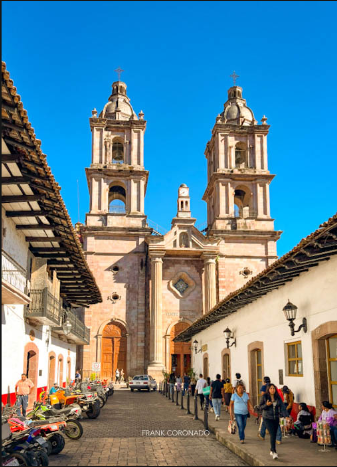
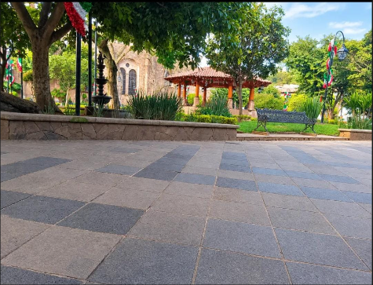
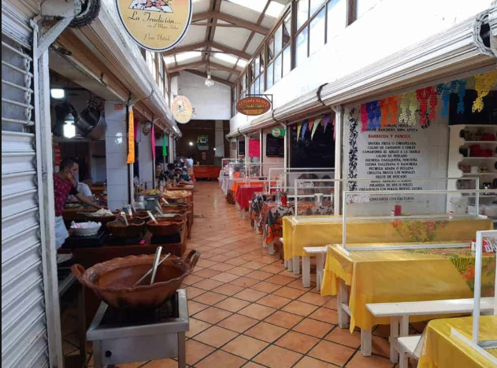

Es la parroquia principal del pueblo. Está en el centro histórico, frente al Jardín. Empezó a construirse en 1880 y se terminó en 1994.
Tiene 2 torres gemelas de estilo neoclásico y es considerada el templo más alto del Estado de México. Adentro conserva piezas del siglo XVII como la pila bautismal y una talla de San Francisco. Su fiesta patronal es el 4 de octubre.

Está en el Jardín Central, justo enfrente de la iglesia. Es el punto de reunión del pueblo.
Los domingos hay música de banda y alrededor venden esquites, nieves, campechanas y antojitos. Es un lugar para caminar, tomar fotos y disfrutar el ambiente colonial del centro.

Se encuentra en la calle Independencia, en la zona centro, y cuenta con diferentes puestos donde se ofrecen alimentos, productos frescos y platillos preparados de manera tradicional."
Entre los alimentos que puedes encontrar destacan las quesadillas, tacos, barbacoa, carnitas, cecina, sopitos, pambazos y otros antojitos mexicanos. También puedes disfrutar de pan tradicional, frutas y verduras frescas. Es un sitio ideal para conocer los sabores de la región y experimentar el ambiente cotidiano de sus habitantes."